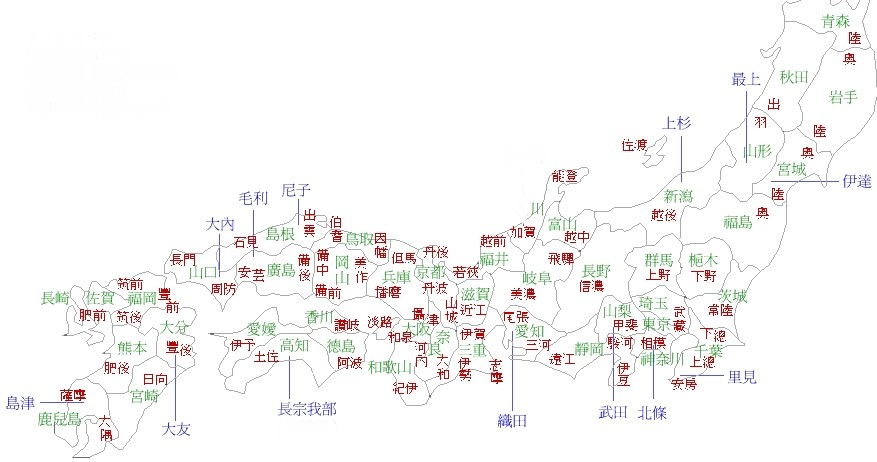

返回主页
日本的藩

萨摩藩，为日本江户时代的藩属地，位于九州西南部，领地包含今日的鹿儿岛县全域（含奄美群岛）与宫崎县的西南部。西乡隆盛、大久保利通、大山岩、东乡平八郎皆出于此。
长州藩，是日本江户幕府时期的藩属地，位于日本本州最西的山口县，较为出名的是伊藤博文、山县有朋。
三井：伊藤博文、山县有朋、井上馨、涩泽荣一
三菱：大隈重信、福泽谕吉
version:1.0; jobnet@188.com ©
retter2012.com